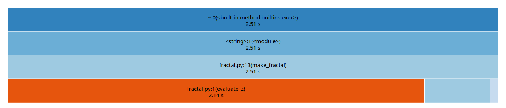

Profiling
Contenido
31. Profiling¶
El primer paso antes de optimizar es identificar los sectores críticos o “cuellos de botella” de nuestro programa. A esto lo llamamos hacer un profiling de código
%matplotlib inline
import numpy as np
import matplotlib.pyplot as plt
31.1. ¿Qué es profiling?¶
Se refiere a medir
Tiempo de ejecución, ya sea total, por función o por linea de código
Utilización de recursos de hardware como memoria, cpu o disco duro
de una rutina con el fin de encontrar aquellas secciones más lentas e ineficientes (sectores críticos)
A continuación veremos como hacer profiling de nuestro código en Python usando el ambiente Jupyter y las magias de IPython
Ejemplo: Conjunto de Julia
A modo de ejemplo haremos profiling de un script de Python que calcula el famoso fractal conocido como el Conjunto de Julia (Julia Set), llamado así en honor a su descubridor, el matemático francés Gaston Maurice Julia
El fractal de Julia corresponde a todos los números complejos \(z\) para los que la siguiente ecuación
no diverge al ser calculada recursivamente. En la ecuación anterior \(c \in \mathbb{C}\)
El script fractal.py tiene una implementación del conjunto de Julia usando Python puro, es decir sin usar librerias
from IPython.display import Code
Code(filename="src/fractal.py")
def evaluate_z(zi, zr, maxiters=50, cr=-0.835, ci=-0.2321):
nit = 0
zi2 = zi**2
zr2 = zr**2
while zi2 + zr2 <= 4. and nit < maxiters:
zi = 2*zr*zi + ci
zr = zr2 - zi2 + cr
zr2 = zr**2
zi2 = zi**2
nit +=1
return nit
def make_fractal(N, maxiters=50):
image = []
for i in range(N):
row = []
for j in range(2*N):
zi = -1.0 + i*2/N
zr = -2.0 + j*2/N
row.append(evaluate_z(zi, zr, maxiters))
image.append(row)
return image
Si ejecutamos la función make_fractal con una resolución de 500 pixeles y 50 iteraciones el resultado es
from src.fractal import make_fractal, evaluate_z
fractal_image = make_fractal(N=500, maxiters=50)
fig, ax = plt.subplots(figsize=(8, 4), tight_layout=True)
ax.imshow(fractal_image, aspect='equal', origin='lower')
ax.axis('off');

A continuación realizaremos un profiling de cómputo en función del tiempo necesario para calcular el fractal
31.2. Midiendo tiempo de ejecución¶
31.2.1. Magia %time¶
Python tiene un módulo nativo llamado timeit que ofrece funciones para medir tiempo de cómputo. Algunas de estas funciones han sido incorporadas en magias de IPython, lo cual permite utilizarlas de forma simple y conveniente
La primera que revisaremos es %time que se usa anteponiendose a una función como muestra el ejemplo
%time mi_resultado = mi_funcion(mis_argumentos)
El resultado de la linea anterior es algo similar a
CPU times: user 2.44 s, sys: 2.41 ms, total: 2.45 s
Wall time: 2.57 s
donde
Wall time: Es el tiempo total de un proceso/función/expresión desde su principio (lanzamiento) hasta su fin (retorno)
CPU time (total): Es el tiempo en que el CPU está dedicado procesando la tarea solicitada, siempre será menor que el Wall-time
Nota
La magia %time mide el tiempo de una linea de código. Si queremos medir el tiempo total de un bloque de ejecución de jupyter completo podemos agregar %%time al principio del bloque
Ejemplos
Midamos el tiempo que demora en calcularse el fractal de Julia con la magia %time
¿Cuánto demora la función make_fractal?
%time result1 = make_fractal(N=500, maxiters=50)
CPU times: user 2.03 s, sys: 3.5 ms, total: 2.04 s
Wall time: 2.06 s
¿Qué ocurre si medimos una segunda vez?
%time result2 = make_fractal(N=500, maxiters=50)
CPU times: user 2.03 s, sys: 41 µs, total: 2.03 s
Wall time: 2.03 s
np.allclose(result1, result2)
True
Nota
El resultado en ambos casos es idéntico, sin embargo, el tiempo de ejecución es ligeramente distinto
Advertencia
Cada vez que ejecutamos un código alteramos el estado de nuestro sistema (cache, memoria). Por lo tanto lo más correcto para medir el tiempo de nuestra rutina es ejecutarla varias veces y calcular un promedio
31.2.2. Magía %timeit¶
Podemos obtener estadísticos del tiempo de cómputo de un script, función o expresión de Python de forma conveniente usando la magia timeit.
Esta magia tiene varios argumentos, a continuación revisamos los más importantes:
-r<R>: Define que el algoritmo se repetira<R>veces para calcular los estadísticos-n<N>: Define que el algoritmo se ejecutará<N>veces seguidas (loop) en cada repetición-p<P>: Se usa una precisión de<P>dígitos en los resultados-q: No imprimir los resultados-o: Retorna un objetoTimeitResult, con el cual podemos manipular, analizar y graficar los tiempos de ejecución
Esta magia se utiliza como
%timeit -r10 -n5 mi_funcion(mis_argumentos)
Que en pseudo código sería como
tiempos = []
for _ in range(10): # Repeticiones (<R>=10)
t_inicio = time.now()
for _ in range(5): # Loop (<N>=5)
mi_funcion(mis_argumentos)
t_fin = time.now()
tiempos.append(t_fin - t_inicio)
return sum(tiempos)/(N*R)
Es decir que timeit retorna un promedio de promedios. En general
<R>debe ser lo suficientemente grande para que los estadísticos que calculemos sean confiables<N>debe ser lo suficientemente grande para que el tiempo medido sea representativo demi_funcion
Advertencia
Si mi_funcion toma menos de 10 microsegundos es recomendable subir el \(N\). De lo contrario el tiempo podría estar dominado por otros procesos, como por ejemplo el garbage collector de Python
Nota
Si no se especifica <N> la magia buscará de forma automática un valor adecuado
Ejemplo
Utilicemos timeit para hacer profiling de make_fractal
time_object = %timeit -r3 -n3 -o -q make_fractal(N=500, maxiters=50)
time_object
<TimeitResult : 1.98 s ± 10.5 ms per loop (mean ± std. dev. of 3 runs, 3 loops each)>
Los atributos más importantes del objeto TimeitResult son
timings: Lista con los tiempos de cada repeticiónaverage: Promedio de los tiemposstdev: Desviación estándar de los tiemposbestyworst: Tiempo más rápido y más lento, respectivamente
time_object.average, time_object.stdev, time_object.best, time_object.worst
(1.9759494354444136,
0.010476828778578784,
1.9611353033333216,
1.9835846006665936)
np.array(time_object.timings)
array([1.9835846, 1.9611353, 1.9831284])
31.2.3. Magia %prun¶
El módulo nativo de Python cProfile mide la cantidad de llamadas y el tiempo de cada función ejecutada por nuestra rutina
La magia de IPython %prun nos da una forma conveniente para usar este módulo
%prun mi_funcion()
Lo anterior retorna una tabla con las siguientes filas
ncalls: Número de veces que se llama la función
tottime: Tiempo total en dicha función (sin contar subfunciones)
percall: ttime/ncalls
cumtime: Tiempo total en dicha función y sus subfunciones (tiempo de función recursiva)
percall: cumtime/ncalls
Algunos argumentos importantes de %prun
-spara que el resultado quede ordenado según una fila en particular-lsi queremos especificar la cantidad de líneas a mostrar en la tabla
Ejemplo
Usemos prun en la función make_fractal ordenando según el tiempo acumulado
%prun -s cumtime make_fractal(N=500, maxiters=50)
Esto levantará una tabla en tu navegador como la que se muestra a continuación

De la tabla vemos que
La función con mayor tiempo total es
evaluate_zque está en la linea 1 de fractal.pyevaluate_z()se llama 500.000 veces
En general el tiempo total es mayor que el que medimos con time y timeit. Esto se debe al overhead de prun
Visualizando el resultado de prun
Podemos generar una visualización de los resultados de cProfile en nuestro navegador usando SnakeViz. Puedes instalar la librería usando el siguiente comando de conda
conda install snakeviz
Esto creará un ejecutable snakeviz.
Antes de utilizar en jupyter es necesario habilitar la magia cargando la extensión, como se muestra a continuación:
%load_ext snakeviz
%snakeviz -t make_fractal(N=500, maxiters=50)
lo cual retorna un resultado gráfico similar al siguiente
{kind=link}
Nota
La opción -t carga el gráfico en una pestaña de navegador nueva
Esta herramienta puede mejorar considerablemente el estudio de nuestro código cuando se tiene una gran cantidad de funciones en distintas jerarquías
cProfile sin IPython
Si no contamos con el ambiente IPython podemos usar cProfile directamente sobre un script de Python con
python -m cProfile -o tabla.prof script.py
Donde el resultado queda grabado en el archivo tabla.prof
31.2.4. Magia %lprun¶
Hemos visto como medir el tiempo total de un código en Python y el tiempo desglosado por cada llamado a función de dicho código. Pero en ocasiones puede resultar más informativo estudiar el tiempo de ejecución de cada linea de nuestro código por separado
Nota
Esto corresponde a un tipo de profiling llamado line by line
Podemos hacer este tipo de profiling usando la extensión externa line_profiler. Puedes instalar esta extensión con el siguiente comando
conda install line_profiler
Una vez instalada se debe cargar la extensión para habilitar la magia lprun, como se muestra a continuación:
Ejemplo
%load_ext line_profiler
%lprun -f mi_método mi_rutina
Esta magia requiere que se especifique un método o función dentro de la rutina con el argumento -f. Ejecutar la magia levantará una pestaña con una tabla
La tabla tiene una fila por linea de código y las siguientes columnas
Line: Número de la linea dentro del código fuente
Hits: La cantidad de veces que se llama a esa linea
Time: Tiempo total de dicha linea
Per hit: Tiempo total dividido la cantidad de llamadas
31.3. Medir uso de memoria¶
31.3.1. Magia %memit¶
Podemos medir la memoria utilizada por un proceso usando la librería externa memory_profiler. Se puede instalar facilmente con:
conda install memory_profiler
Luego se habilita y utiliza con
%load_ext memory_profiler
%memit funcion()
Que retorna la cantidad de memoria RAM usada por funcion
Nota
Con esto también se habilita la magia %mprun para medir el uso de memoria linea a linea
31.3.2. Módulo tracemalloc¶
Python tiene un módulo nativo llamado tracemalloc que permite calcular estadísticas sobre la memoria reservada por un proceso o script de Python
A continuación se muestra un ejemplo de uso
import tracemalloc
tracemalloc.start()
# Acá se corre el código que quieres estudiar
snapshot = tracemalloc.take_snapshot()
top_stats = snapshot.statistics('lineno')